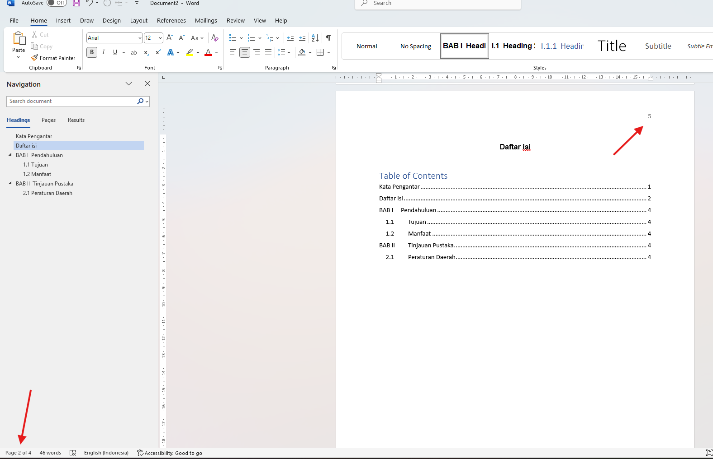
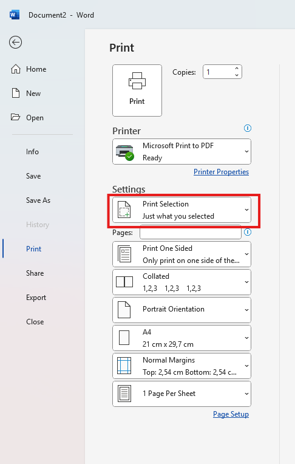

Penjelasan Masalah
Ada kalanya ketika kita ingin mencetak beberapa halaman khusus pada word dan ketika hasil cetak keluar bukan halaman yang kita inginkan.
Langkah Penyelesaian
- Solusi pertama adalah pastikan apakah halaman memiliki penomoran dari header/footer. 
- Penomoran pada header/footer belum tentu sama dengan jumlah halaman sebenarnya jadi saat terdapat penomoran pada header/footer gunakan nomor tersebut sebagai patokan saat akan cetak dokumen.
- Jika halaman yang ingin anda cetak berdekatan atau berderet anda bisa menseleksi halaman yang ingin di cetak kemudian gunakan print selection pada menu print untuk mencetak halaman yang diinginkan. 